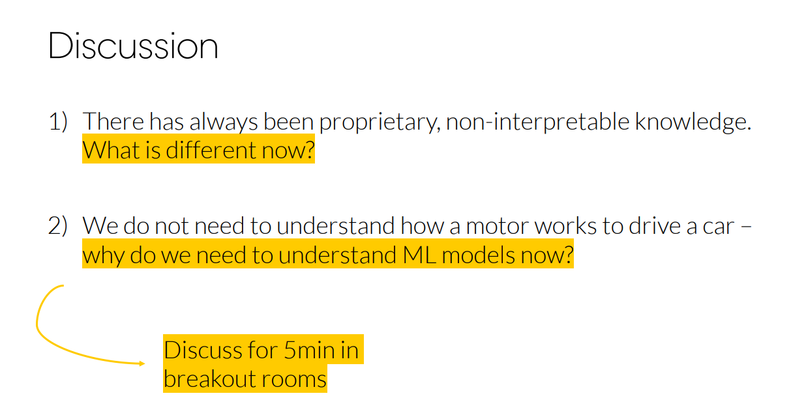

Materials
Best practices and resources for preparing teaching materials.
TODO:
- Commands: simplest: modify on github, gh-actions will build the new page (including all materials). local: make slides/pdf
- Design contents in such a way that students can learn them (after the session, pdf, making comments)
- Add dynamic illustrations only as an extra (link them in the offline version)
- Ask students how they learn (PDF, …) whether they use a knowledge management system (which one), and adapt accordingly
- Template is available here
- Add note on shared-teaching-materials
Important
Each sentence should be in a new line (to ensure that the git diff is readable). To create a paragraph, add an empty line. This makes the history more readable and merging easier (see semantic line breaks).
Important
Do not create quarto brand extension or use the revealjs seminar plugin (complexity).
Slides
- Slides are in reveal-js.
- Learning objectives should be on all slides (verifiable outcomes).
- Use markers for tasks/questions (see example)
Explicit discussion prompts. Example:

Quarto extensions for slides:
- simplemenu
- pointer
- custom callouts
- downloadthis
- code animations
- countdown timer (link exercise sheets on slides)
- flashcards for quick questions with solutions displayed on pressing
q
NoteSlide template
Limitation: custom-callouts do not work in revealjs.
---
title: "Analytics and Big Data"
subtitle: "Foundations of data analytics"
section_label: "Introductory"
session: "Session 1"
date: "2026-03-23"
---
# Heading (added to simplemenu overview) {data-stack-name="Data"}
## Contents
# Summary (simplemenu overview hidden) {data-state="hide-menubar"}
:::{.callout-note}
Note that there are five types of callouts, including:
`note`, `tip`, `warning`, `caution`, and `important`.
:::
:::: {.columns}
::: {.column width="40%"}
Left column
:::
::: {.column width="60%"}
Right column
:::
::::
Your content here… [^1]
[^1]: A url and further information.
@CastonguayWagnerMotulskyEtAl2023 is useful.
<!-- _class: centered -->
Centered text...TODO: Mermaid diagrams
Feedback
- Limesurvey
- Rustpad for anonymous feedback/suggestions (contents are deleted after 1 day of inactivity)
Embedding Google Forms (anonymous responses possible):
<style>
blockquote {
border-top: 0.1em;
font-size: 60%;
margin-top: auto;
}
</style>
<iframe src="https://docs.google.com/forms/d/e/1FAIpQLSeACViOkyuuG3Bvz4Dhq1yA-Fm8WTPiRst5D_IxK3UuRyFzjg/viewform?embedded=true" width="100%" height="90%" frameborder="" marginheight="0" marginwidth="0">Wird geladen…</iframe>
> Open [responses](https://docs.google.com/forms/d/1Wa_MNL3zClW7j-1NPm31PIP7pXs7QqLnZPi4oefA_gA/edit#responses){target=_blank}Typography defaults:
--font-family: "Source Sans Pro", sans-serif;Adding headings to the navigation
## Heading {data-menu-title="I. Overview"}
### Will not be in the navigationTimer
quarto add gadenbuie/countdown/quarto
{{< countdown minutes=5 seconds=32 top=10 left=0 >}}Code annotation
See link:
- 1
-
Take
penguins, and then, - 2
- add new columns for the bill ratio and bill area.
Icons
Based on Bootstrap
{{icon="mortarboard-fill"}}
NoteSlide shortcuts
Shortcuts:
- g : goto slide
- b : blackboard
- d : download blackboard notes
NoteSlide preparation
Convert PowerPoint to quarto:
pptx2md "slides.pptx" --output "slides_with_notes.qmd" --enable-slides --qmd --image-dir "images"Prompt
Create Reveal.js slides with a title page, simple menu navigation, and support for sections, columns, asides, and centered images. Use this slide formatting structure:
---
title: "<TITLE>"
author: "Prof. Dr. Gerit Wagner"
format:
revealjs:
section-divs: true
center: false
title-slide-attributes:
data-state: "hide-menubar"
simplemenu:
barhtml:
header: ""
footer: "<div class='menubar'><ul class='menu'></ul><div class='slide-number'></div></div>"
scale: 0.67
revealjs-plugins:
- simplemenu
---
Use:
# for main sections (stack navigation, with {data-stack-name="..."} where needed)
## for slides within a section
::: columns / ::: column for side-by-side layouts
::: aside for sources or small side notes
{fig-align="center" width="X%"} for centered visuals
Fenced code blocks (e.g., Python) for figures generated with code
Keep the style clean, structured, and concise, similar to academic lecture slides on analytics and big data.Notebooks
We use Jupyter notebooks for exercises. The benefits of Jupyter notebooks are summarized by Vial & Negoita (2018):
- No separation between code and pedagogical materials, no need to switch attention between materials for students.
- Interactive Python: re-running parts of the code (instead of the entire program) with variables and objects staying in memory.
- Option to include short problems for students.
Jupyter notebooks should be delivered through GitHub Codespaces to avoid individual setup problems (see Malan, 2024).
NoteNotebook template
Include images in html tags (otherwise, attributes like width will be ignored):
<img src="images/schema_solution_1.png" width="800">
Mermaid resizing (with/out divs) does not work in blocks. Export as png.
When using `coatless-quarto/assign`, combine assignment and solution in the same qmd file.
This text will appear across all versions of the document
:::{.direction}
Only display the directions content in the assignment document
:::
:::{.sol}
Only display the answer in the solution or rubric documents
:::
:::{.rubric}
Only display the grading notes in the rubric document.
:::
<!--
Comments can be used to add further explanations or links to references/resources
-->
NoteResources for notebook design
Teaching notes
- Teaching notes are shared and updated regularly.
NoteTeaching notes template
---
title: "Session X: XXX"
---
### Week 1: Topics (Teaching notes)
| Time (min) | Duration | Topic | Additional materials |
|------------|-----------|--------------------------------------------------------------------------------|------------------------------------------------|
| 0-10 | 10 | [Intro and instructor background](#intro) | |
| 10-25 | 15 | [What you will learn](#what-you-will-learn) | |
| 50-80 | 30 | [Orientation in Open Source projects](#orientation-in-open-source-projects) | Group task, discussing solutions afterwards |
| 80-90 | 10 | [Next steps](#next-steps) | |
::: objective
In this session, our goal is to .... (competencies)
:::
Summary of last session.
### Intro and instructor <a id="intro"></a>
- Contents (e.g., photo of the board writing)
- Highlight areas that can be shortened (optional)
- Additional challenges and tasks for students
- Typical questions raised (common errors)
Summarize lessons learned.
::: callout-note
**Page breaks for PDFs/print**
<div class="page-break"></div>
:::Native page break:
{{< pagebreak >}}Video recordings
Best practices on software, lighting/audio etc. should be documented here.
Community-engaged teaching
For project-based courses, consider linking teaching activities to real communities, repositories, or open-source projects.
A useful model is JabRef’s teaching page: Teaching with JabRef.
Recommended elements:
- Curated issues or contribution ideas suitable for students.
- Early coordination with maintainers or community partners.
- A clear contribution workflow from setup to review and pull request.
- Peer and instructor review before upstream submission.
- Reflection on collaboration, maintainability, and community norms.
This pattern is especially relevant for the Open Source Project course, but can also support software, data, documentation, or research-infrastructure assignments.
Resources
- Course Materials Handbook
- Instructor guide
- awesome quarto
- Slidecrafting: Making beautiful slides with reveal.js and Quarto
- Example course material page: Slidecrafting Workshop, session 05 — a clear session page with learning objectives, navigation between sessions, and links to the slides and source.
- revealjs editor (slides.com): ai prompts limited (generating many slides, or changing text fields) - cannot do animations with it. limited import/export (for quarto/revealjs) - only complex/full htm.
NoteTerminal animations (asciinema)
Installation
pip install asciinema
git clone https://github.com/asciinema/agg
cd agg
docker build -t agg .Recording and conversion
asciinema rec demo.cast
# code ...
# ctrl+d to quit
# convert:
docker run --rm -it -u $(id -u):$(id -g) -v $PWD:/data agg demo.cast demo.gifTeaching materials and cases
- HBD teaching cases
- JISE teaching cases
- Ivey Publishing (Western University)
- The Case Centre (casecentre.org)
- INSEAD case collection
- Stanford GSB cases
- Journal of Open Source Education
- Proceedings of the ISCAP Conference on Information Systems and Computing Education
Possible extensions
- Setup of exercises
- Quartz (obsidian) and infos on how to export notes (obsidian/notion/word)
NoteQuarto extensions
- https://github.com/jmbuhr/quarto-qrcode
- https://github.com/fradav/quarto-revealjs-animate
- https://github.com/ofkoru/quarto-animate-graph
- https://github.com/parmsam/quarto-excalidraw
- https://github.com/gadenbuie/quarto-now
- https://github.com/parmsam/quarto-subtitles
- https://github.com/EmilHvitfeldt/quarto-revealjs-highlightword
- https://github.com/produnis/quarto-cheatsheet
- https://github.com/ofkoru/quarto-leader-line
- https://github.com/parmsam/quarto-quizdown (interactive - incompatible with PDF export)
- https://github.com/shafayetShafee/interactive-sql
- https://github.com/peter-gy/quarto-gradio
- https://quarto.thecoatlessprofessor.com/pyodide/
- https://github.com/coatless-quarto/pyodide
- https://github.com/quarto-ext/shinylive
- https://github.com/coatless/quarto-webr?tab=readme-ov-file
- https://github.com/EmilHvitfeldt/quarto-snow
- https://github.com/quarto-ext/fontawesome
- https://parmsam.github.io/quarto-github-corner/
References
Malan, D. J. (2024). Containerizing CS50: Standardizing students’ programming environments. In Proceedings of the 2024 on innovation and technology in computer science education v. 1 (pp. 534–540). https://doi.org/10.1145/3649217.3653567
Vial, G., & Negoita, B. (2018). Teaching programming to non-programmers: The case of python and jupyter notebooks. International Conference on Information Systems. https://aisel.aisnet.org/icis2018/education/Presentations/1/